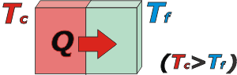

NO ME SALEN
(APUNTES TEÓRICOS DE BIOFÍSICA DEL CBC)
CALORIMETRIA, CALOR Y TEMPERATURA
|
|

|
| |
Lo primero que tenés que aprender en este capítulo es que calor y temperatura -en Física- son cosas diferentes. En el lenguaje coloquial se utilizan casi como sinónimos. Pero acá no.
La temperatura, que se simboliza T, es una manifestación de la materia detectable por los sentidos de nuestra piel y -fundamentalmente- por los termómetros. Si necesitás hilar más fino podés ir acá, donde te explico que se trata de una propiedad emergente de la energía cinética promedio de todas las moléculas y átomos que integran un cuerpo (del movimiento, de la agitación). Y no me voy a explayar más porque vos sabés perfectamente qué es y cómo se mide la temperatura. (No me hagas calentar).
Calor, que se simboliza Q, en cambio, no es algo fácil de medir ni explicar. Calor es energía fluyendo de un cuerpo a otro del que te podés dar cuenta porque advertís cambios de temperatura, o cambios de estado (por ejemplo, sólido a líquido) u otro cambio un poco más sutil... aunque, ya vas a ver: no hay ambigüedades.
El siguiente ejemplo es bastante esclarecedor: suponete que se ponen en contacto dos cuerpos, uno que está muy caliente, y el otro muy frío (dicho en fino: uno a muy alta temperatura y el otro a muy baja temperatura). Al estar en contacto, espontáneamente, el cuerpo de mayor temperatura le cede calor al de menor temperatura, que la recibe. |
| |
 |
|
Acordate de usar T mayúscula para temperatura
y t minúscula para tiempo. |
|
El calor hace que el cuerpo frío aumente su temperatura y el de mayor temperatura la disminuya. El proceso sigue hasta que la temperatura de ambos cuerpos se iguala. |
|
|
El calor siempre "fluye" espontáneamente desde el cuerpo que se halla a mayor temperatura hacia el cuerpo de menor temperatura. |
|
|
|
|
De modo que como el calor es energía, podremos medirlo es joules, J, aunque es muy frecuente el uso de una unidad especial para este tipo de energía también bastante especial: se llama caloría, y se simboliza cal. La relación entre ambas es:
1 cal = 4,187 J
o también
1 J = 0,24 cal
Existen otros modos de entregarle calor a un cuerpo que no sea poniéndolo en contacto con otro cuerpo a mayor temperatura. Un modo práctico que utilizamos mucho en casa es colocar el cuerpo arriba de la hornalla (prendida, vivo).
CALOR Y AUMENTO DE TEMPERATURA
Si le entregamos a varios cuerpos diferentes una misma cantidad de calor (por ejemplo colocando a todos el mismo tiempo sobre la hornalla) no todos van a sufrir el mismo cambio de temperatura.
Por ejemplo si colocás 1 litro de agua sobre la hornalla 1 minuto, o 100 ml de agua el mismo tiempo... no te aconsejo que metas el dedo en el de 100 ml, te vas a quemar. Parece lógico: hace falta más calor para lograr un mismo aumento de la temperatura en un cuerpo de mayor masa.
Pero también hay una característica intrínseca de los cuerpos que los hace más fáciles o más difíciles de calentar. Si colocamos 1 litro de agua 1 minuto sobre la hornalla o colocamos 1 kilo de hierro el mismo tiempo... no vayas a retirar el hierro sin una agarradera. Ambos cuerpos tienen la misma masa, pero el hierro aumenta mucho su temperatura, en cambio el agua mucho menos. Está claro que el hierro es más fácil de calentar.
Todo lo dicho se puede resumir en una sencilla expresión que describe los cambios de temperatura de los cuerpos al recibir o ceder calor.
|
|
|
|
|
|
donde c es la propiedad intrínseca de los materiales, llamada calor específico, (algunas veces también: calor sensible) que describe cuán fácil o difícil resulta variarle su temperatura.
Acá tenés una tabla de calores específicos de algunos materiales corrientes. |
|
|
CALORES ESPECIFICOS |
| |
(kJ/kg.K) |
(cal/g°C) |
agua líquida |
4,169 |
0,995 |
hielo |
2,089 |
0,500 |
vapor de agua |
1,963 |
0,470 |
acero |
0,447 |
0,106 |
cobre |
0,385 |
0,092 |
aluminio |
0,898 |
0,214 |
hierro |
0,443 |
0,106 |
| plomo |
0,130 |
0,030 |
| grasa |
0,690 |
0,165 |
madera |
2,510 |
0,600 |
Nota: los calores específicos dependen levemente de la temperatura a la que se halle el cuerpo. Los valores consignados son promedios. Para el agua líquida se utiliza el valor aproximado 1 cal/gºC. |
|
|
|
En algunos casos la propiedad intrínseca se atribuye al cuerpo y no a la sustancia de la que está hecho. En ese caso se le da el nombre de capacidad calorífica, y se simboliza con la C mayúscula. Si se tratase de un cuerpo homogéneo constituido por una sustancia única, tendremos:
C = c . m
La expresión de variación de temperatura quedará expresada de este modo:
Q = C . (TF – T0)
CALOR Y CAMBIO DE ESTADO
Los cambios de estado de agregación de la materia (sólido a líquido, etcétera), también son consecuencia de la pérdida o la ganancia de calor. Durante un cambio de estado la temperatura se mantiene constante. Por ejemplo, mientras el hielo se derrite, la temperatura se mantiene estable a cero grado centígrado. Y mientras el agua se evapora -o sea, mientras está hirviendo- se mantiene a 100 grados.
Para derretir más hielo, necesitás más calor. Esas magnitudes son directamente proporcionales. Pero con la misma cantidad de calor que derretís un kilo de hielo podés derretir como 15 kilos de plomo (lógicamente, tenés que tener esos materiales a su temperatura de fusión: cero para el hielo, 327 para el plomo).
Resumiendo: el cambio de estado no sólo depende de la cantidad de materia que cambia, sino también de una propiedad intrínseca de la materia llamada calor latente que se simboliza con la letra L mayúscula:
LF, calor latente de fusión, y LV, calor latente de vaporización.
Q = L . m
La tabla siguiente te muestra algunos calores latentes y la temperatura a la que ocurren los procesos de cambio de estado. |
|
en aquellas funciones que dependen de diferencias de temperatura usar la escala absoluta o la relativa
(K o ºC) es indistinto, da lo mismo
en aquellas funciones que dependen de la temperatura, necesaria-mente debés utilizar la escala absoluta (K) |
|
CALORES LATENTES DE FUSION Y EVAPORACION |
| SUSTANCIA |
T fusión (ºC) |
LF ( cal/g) |
T ebullic.(ºC) |
Lv ( cal/g) |
| agua |
0 |
80 |
100 |
540 |
| plomo |
327 |
5,5 |
1.750 |
208 |
| cobre |
1.083 |
49 |
2.600 |
1.147 |
Nota: las unidades cal/g y kcal/kg son indistintas. En cambio kcal/kg = 4,187 kJ/kg |
|
|
|
CHISMES IMPORTANTES: |
|
|
- Fue en 1761 que un tal Joseph Black (1728-1799) se dio cuenta de que la aplicación de calor al hielo no lo derretía inmediatamente, sino que el hielo absorbía cierta cantidad de calor sin aumentar su temperatura. También observó que la aplicación de calor al agua hirviendo, no daba como resultado la inmediata evaporación. De estos trabajos dedujo que el calor aplicado tanto al hielo como al agua hirviente, tenía que tener una cierta combinación con las partículas de hielo y de agua y convertirse en "calor latente". Este descubrimiento fue una de sus mayores aportaciones científicas. También puso de manifiesto que diferentes sustancias tienen diferentes calores específicos.
|
 |
|
|
|
- Los gases ideales, sin importar de qué sustancia, tienen dos valores característicos: calor específico molar a volumen constante (cV) y calor específico molar a presión constante (cP). El agregado de la palabra molar obedece a que esas constantes están referidas a la masa expresada en moles en lugar de gramos. El valor de estas constantes características depende de la cantidad de átomos que forme la molécula del gas: si los gases son monoatómicos (como los gases raros), o diatómicos (como el O2, H2, etcétera), o triatómicos...
Para gases ideales monoatómicos cV = 1,5 R y cP = 2,5 R,
y para diatómicos cV = 2,5 R y cP = 3,5 R,
donde R es la
constante universal de los gases:
R = 8,314 J/mol K = 0,08207 l atm/mol K
- El agua es una sustancia de propiedades sorprendentes, e inusitadas. El hecho de que su calor latente de vaporización valga 540 cal/g fue determinante para diseñar nuestro sistema de refrigeración fundamental: la transpiración. Consiste en depositar sobre nuestra piel una fina película de agua (sudor) con el único fin de que se evapore. Cada gramo de agua que se volatiliza se lleva consigo 540 calorías... y nos sentimos mejor. Nuestro sistema de refigeración es muy eficiente, salvo los días de mucha humedad, en los que la evaporación se halla muy dificultada. Por eso la humedad relativa ambiente tiene una incidencia directa en el bienestar y la salud.
- El valor de calor específico del agua es otra característica inusitada. El agua es el material más "duro" de enfriar o calentar. Por eso la presencia de agua funciona siempre como estabilizador de temperatura.
- Se llama equilibrio térmico la situación en la que todos los cuerpos que integran un sistema tienen la misma temperatura. En ese estado no hay flujo de calor dentro del sistema.
|
|
|
| PREGUNTAS CAPCIOSAS: |
|
|
- ¿Quién habrá sido el inventor del termómetro, que al definir la temperatura de forma operativa logró separar los conceptos de temperatura y calor?
- ¿El calor específico de los gases, tiene las mismas unidades que los calores específicos de los sólidos y los líquidos?
- ¿Los gases solamente se pueden calentar a presión constante o a volumen constante?
- ¿Por qué los motores a combustión tienen un sistema de refrigeración basado en una cañería interior con un flujo de agua?
- ¿Por qué las variaciones de temperatura entre el día y la noche son de aproximadamente 10 grados en las zonas costeras y de 30 en las desérticas?
- ¿Por qué es más peligroso quemarse con vapor a 100 ºC que con agua a la misma temperatura?
|
|
 |
| |
|
 |
Algunos derechos reservados.
Se permite su reproducción citando la fuente.
Última actualización nov-07. Buenos Aires, Argentina. |
|
| | |
|
|